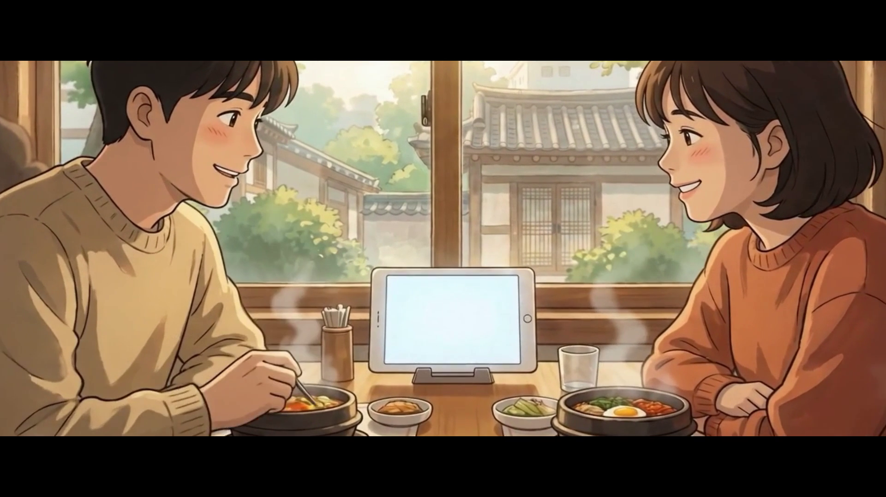
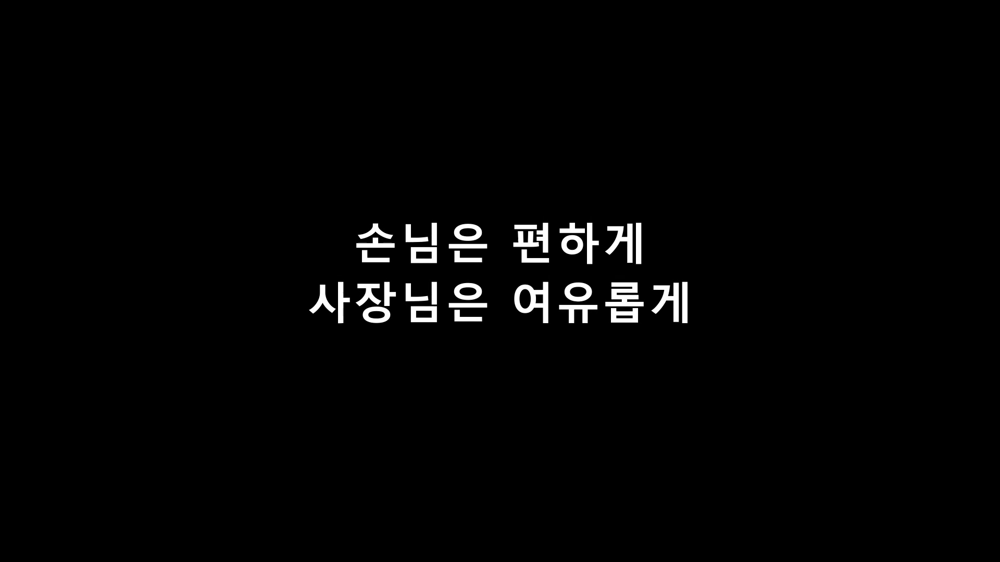
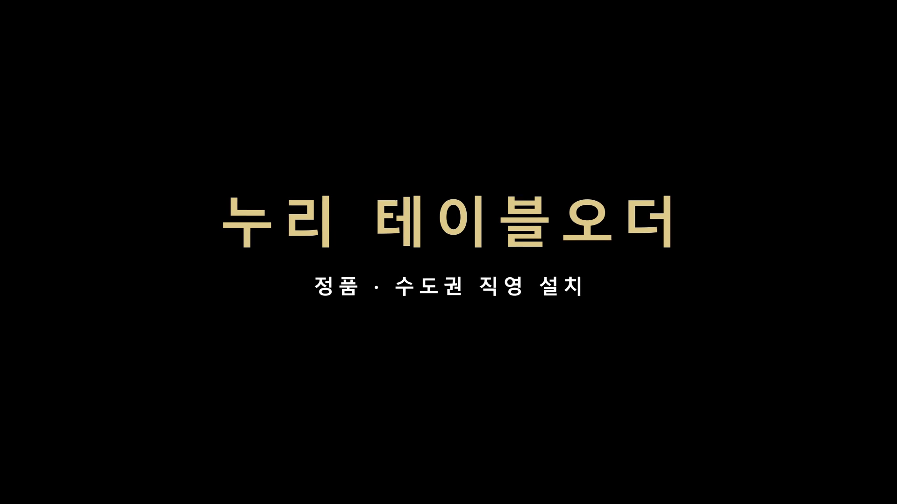

누리 테이블오더 · 27초 · 16:9 · 지브리풍 애니메이션 브랜드 필름 (한글 타이틀 AE 정밀 조판)



| 스타일 | 지브리풍 따뜻한 손그림 애니메이션 (전무 지시 — 참조 영상 기반). 실사 아님 |
|---|---|
| 구성 | 한식당(커플 점심) → "손님은 편하게 / 사장님은 여유롭게" → 저녁 식당(친구) → "14년 · 3만 매장의 선택" → 브런치 카페(가족) → 누리 테이블오더 골드 리빌 → 표준 엔드카드 |
| 소스 | 힉스필드 애니메이션 스틸 3컷 → i2v 3클립 (한국 식당·한국인 20~30대 밝게, 테이블 주문기 자연 노출) |
| 조립 | After Effects 2026 — 클로드 자동 조립 (컴포지션·크로스페이드·슬로우 줌·2.35:1 레터박스·한글 타이틀 4장 = 100% 정확) |
| 🎵 음악 | 제미나이 Lyria 3 맞춤 생성 "Shared Bowls at Noon" (어쿠스틱 기타·피아노·마림바, 따뜻한 애니메이션 무드) |
| 규격 | 1920×1080 · 30fps · 27초 (본편 24초 + 엔드카드) / 9:16 릴스 버전 별도 제작 |
누리네트웍스 내부 검수용 · 검색 비노출